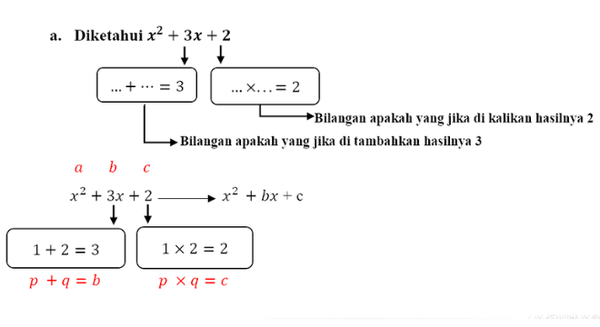
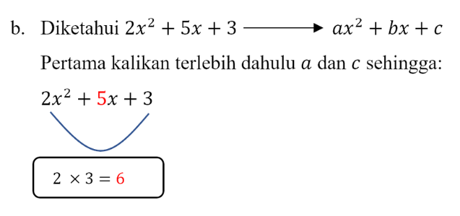

- Siswa mampu menyelesaikan persamaan kuadrat dengan cara memfaktorkan.
- Siswa mampu menyelesaikan persamaan kuadrat dengan cara melegkapkan kuadrat sempurna.
- Siswa mampu menyelesaikan persamaan kuadrat dengan menggunakan rumus kuadratis.
Menyelesaikan persamaan kuadrat sama artinya dengan menentukan akar atau penyelesaian dari persamaan kuadrat tersebut. Pada bahasan sebelumnya kita telah mengetahui bahwa akar atau penyelesaian suatu persamaan kuadrat dalam \[x\] adalah pengganti \[x\] yang memenuhi persamaan tersebut (persamaan tersebut menjadi benar).
Dalam bahasan sebelumnya, pengganti \[x\] tersebut dicari dengan mencoba memilih bilangan yang memenuhi. Namun cara tersebut memakan waktu yang cukup lama (kurang efektif), apalagi jika persamaan kuadrat yang dicari itu tidak sederhana.
Ada tiga cara yang dapat ditempuh dan lebih efektif untuk menyelesaikan persamaan kuadrat, yaitu:
1. Memfaktorkan,
2. Melengkapkan kuadrat senpurna, dan
3. Menggunakan rumus kuadratis (rumus abc).
Rumus faktorisasi bentuk kuadrat \[x^{2} + bx + c\] adalah :
Dengan \[b=p+q\] dan \[c=p\cdot q\]
Kemudian untuk rumus faktorisasi kuadrat \[ax^{2} + bx + c\] dengan \[a \neq 1\] adalah :
Dengan \[b=p+q\] dan \[c=p\cdot q\]

Perhatikan persamaan berikut ini.
a. \[x^{2} + 3x + 2\]
b. \[2x^{2} + 5x + 3\]
c. \[x^{2} - 5x + 6\]

Berapakah nilai \[p\] dan \[q\] yang memenuhi persyaratan sebagai \[b\] dan \[c\] dalam penyelesaian persamaan kuadrat dengan cara memfaktorkan? Jika \[p\] dan \[q\] telah kita temukan, apakah penyelesaian persamaan kuadrat yang kita dapatkan dengan cara memfaktorkan?


Sehingga telah kita dapatkan \[p\] dan \[q\] yaitu 1 dan 2, kemudian kita masukkan kedalam rumus faktorisasi persamaan kuadrat
\[x^2+bx+c=(x+p)(x +q)\] sehingga :
\[x^2+3x+2=(x+p)(x+q)=0\]
\[\Leftrightarrow =\left(x+1\right )\left( x+2\right )=0\]
\[\Leftrightarrow x + 1 = 0 atau x + 2 = 0\]
\[\Leftrightarrow x = -1 atau x = -2\]

Tentukan bilangan yang memenuhi \[... + ...= 5\]
Tentukan bilangan yang memenuhi \[... × ...= 6\]
Sehingga telah kita dapatkan \[p\] dan \[q\] yaitu \[2\] dan \[3\], kemudian kita masukkan kedalam rumus faktorisasi persamaan kuadrat
\[ax^{2} + bx + c = \frac{1}{a}\left ( ax + p \right )\left ( ax + q\right ) = 0\], sehingga :
\[2x^{2} + 5x + 3 = \frac{1}{a}\left ( ax + p \right )\left ( ax + q\right ) = 0\]
\[\Leftrightarrow = \frac{1}{2}\left ( 2x + 2 \right )\left ( 2x + 3\right )= 0\]
\[\Leftrightarrow = \left ( x + 1 \right )\left ( 2x + 3\right ) = 0\]
\[\Leftrightarrow x + 1 = 0 atau 2x + 3 = 0\]
\[\Leftrightarrow x = -1 atau x = -\frac{3}{2}\]
Tentukan bilangan yang memenuhi \[... + ...= -5\]
Tentukan bilangan yang memenuhi \[... × ...= 6\]
Sehingga telah kita dapatkan \[p\] dan \[q\] yaitu \[-2\] dan \[-3\], kemudian kita masukkan kedalam rumus faktorisasi persamaan
kuadrat \[ax^{2} + bx + c = \frac{1}{a}\left ( ax + p \right )\left ( ax + q\right )\], sehingga :
\[\Leftrightarrow \left ( x - 2 \right )\left ( x - 3\right )=0\]
\[\Leftrightarrow x - 2 = 0 atau x - 3 = 0\]
\[\Leftrightarrow x = 2 atau x = 3\]

Tentukan nilai a, b, dan c dari setiap persamaan kuadrat berikut ini.
a. 2x2 + 3x - 2 = 0
- Tarik angka yang telah disediakan kedalam kolom jawaban.
- Klik tombol "Cek Jawaban" untuk mengetahui jawaban tersebut benar atau salah .
- Jawaban yang benar akan tepat pada posisinya dan jawaban yang salah akan kembali ke dalam urutan angka yang telah disediakan.
- Klik tombol "Ulang" jika ingin mengulangi menjawab soal.
b. 4x2 + 16 = 0
c. 3x2 − x = 0
1 2 3 4 5